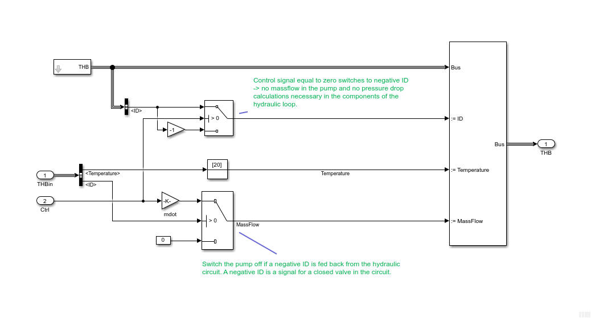

Pump_basic
Path: CARNOT/Hydraulics
Purpose:
Very simple pump model where the mass flow rate is set to a fixed value.
Description:
This is a very simple pump, where the mass flow is set to the a maximum
specified in the mask. This value is multiplied with the incomming control
signal.
Although the model sets a fixed flow rate, the calculation of the pressure
drop may be switched on. This can be usefull for the pump design later.
The parameter static height is only necessary when the parameter for the
pressure drop is set to "Full pressure drop with static height".
The control signal is not limited by the model, a value above 1
is possible. Values below 0 must be avoided.

Input:
| THBin | : | Thermo-Hydraulic Bus of the incomming flow |
| Ctrl | : | control signal |
Output:
| THB | : | Thermo-Hydraulic Bus of the leaving flow |
Parameters and Dialog Box:
Examples:
Open the example explorer from the Matlab command window
ExampleBrowser
or load the examples via the CARNOT library.
Characteristics:
| Direct Feedthrough | : | Yes (Input Ctrl) |
| Sample Time | : | Inherited from driving block |
| Vectorized | : | No |